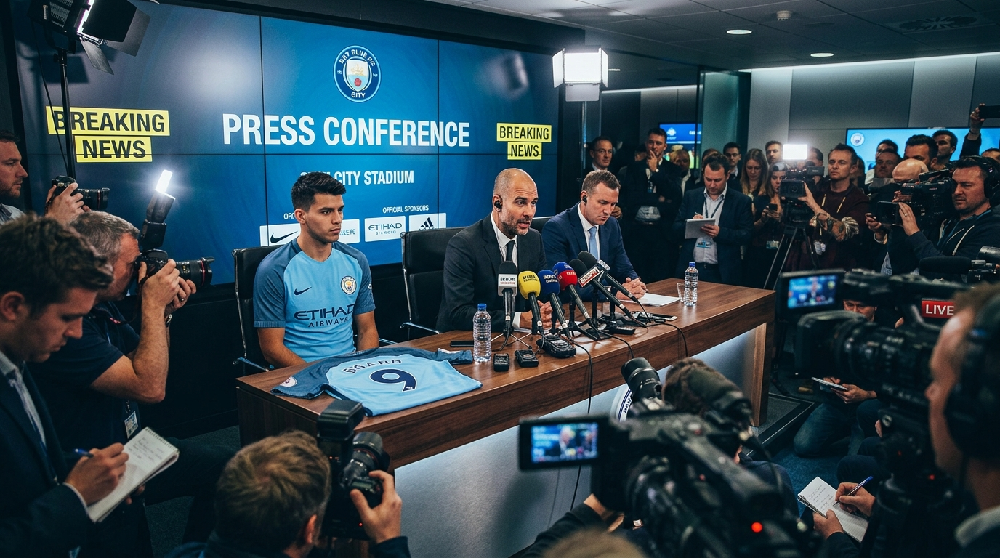

C'est un véritable coup de maître que vient de réaliser la direction du Havre Athletic Club en ce samedi matin. Alors que la saison bat son plein au Stade Océane, le plus ancien club de football français (fondé en 1872) a conclu un accord historique pour le transfert d'un joueur d'envergure internationale.
Les négociations, menées dans la plus stricte confidentialité depuis plusieurs semaines par l'état-major ciel et marine, ont abouti à un contrat de trois saisons. Présent au centre d'entraînement pour satisfaire à la traditionnelle visite médicale, le nouvel arrivant a déjà pu poser avec le maillot ciel et marine et adresser ses premiers mots aux supporters havrais.
Retrouvez ci-dessous l'intégralité de la conférence de presse retransmise par HAC TV :
